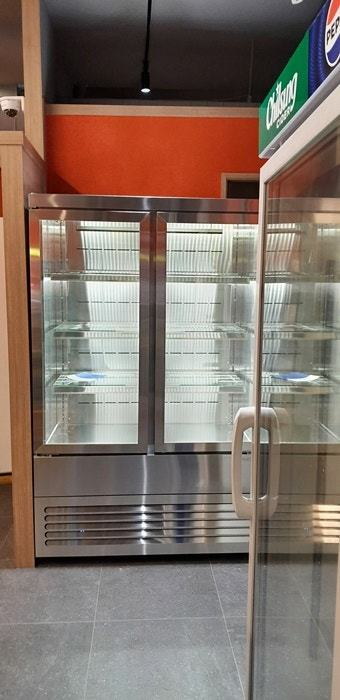
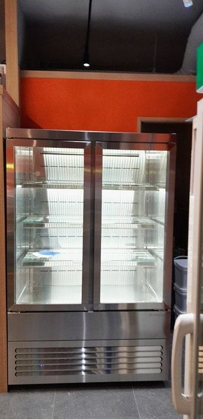
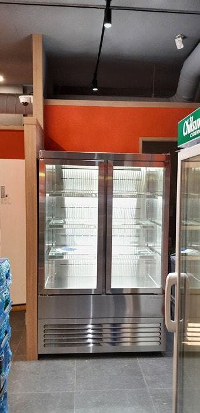
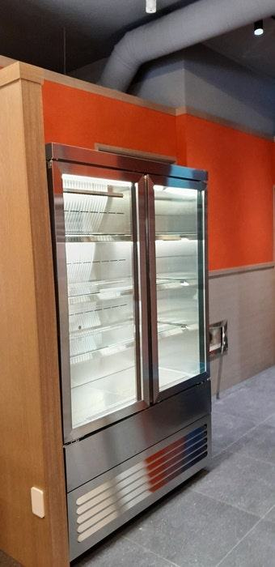
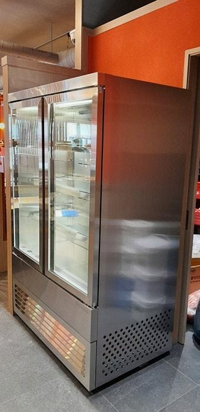
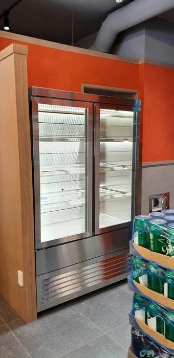
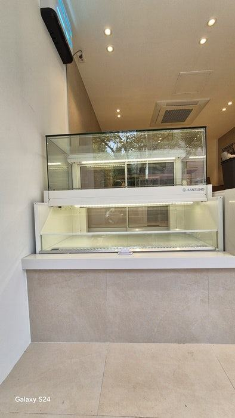

쇼케이스 이용 및 관리
정육숙성고 정육쇼케이스 차이, 고기를 재우는 장비와 파는 장비

정육숙성고는 원육을 덩어리째 오래 두면서 맛을 들이는 장비이고, 정육쇼케이스는 손질한 고기를 손님 앞에 펼쳐 놓고 빠르게 판매하는 장비입니다. 고기를 숙성해 메뉴 차별화를 하려면 숙성고, 부위별 판매가 중심이면 쇼케이스가 맞고, 둘 다 필요하면 역할을 나눠 배치하시는 편이 좋습니다.
안녕하세요. 고기 매장에 들어가는 냉장 장비를 직접 설계하고 만드는 한성쇼케이스입니다.
식육식당이나 정육점 오픈을 앞둔 사장님들이 견적 상담 중에 자주 멈칫하시는 대목이 있습니다. "숙성고를 따로 들여야 하나요, 아니면 쇼케이스 하나로 같이 쓰면 안 되나요?"
겉보기엔 둘 다 유리문 달린 고기 냉장고라 비슷해 보이지만, 안에서 고기가 머무는 시간과 문이 열리는 횟수, 손님이 바라보는 각도가 전혀 다릅니다.
하나로 두 역할을 시키면 숙성도, 판매도 어중간해지기 쉽습니다.
오늘은 두 장비가 실제로 어디서 갈리는지, 우리 매장엔 어느 쪽이 먼저인지 판단하는 순서를 정리해 보겠습니다.
1. 고기가 머무는 시간이 다릅니다
정육쇼케이스에 들어가는 고기는 이미 부위별로 손질돼 그날이나 며칠 안에 팔려 나갈 상품입니다. 쟁반에 담긴 등심, 목살, 다짐육이 손님 눈높이에 맞춰 놓이고, 판매되는 대로 뒤에서 다시 채워집니다.
숙성고는 반대로 큰 덩어리 원육을 걸거나 올려 두고 일정 기간 건드리지 않는 장비입니다. 고기 겉면이 마르면서 속 맛이 깊어지는 과정을 기다려야 하므로, 안의 공기가 고르게 돌고 온도와 습도가 흔들리지 않는 것이 핵심입니다.
적정 조건은 부위와 숙성 방식에 따라 달라지니 사용하실 원육 기준으로 상담받아 보세요.
- 손질한 고기를 그날그날 판다면 쇼케이스 쪽입니다.
- 덩어리째 오래 두고 맛을 들일 계획이면 숙성고가 필요합니다.
2. 문 여닫는 횟수와 습도 관리
정육쇼케이스는 하루에도 수십 번 문이 열립니다. 그래서 문을 열고 닫은 뒤 내부 온도가 얼마나 빨리 돌아오는지, 뒷문으로 사장님이 꺼내기 편한지가 중요합니다.
평대형이라면 손님 쪽 유리는 고정하고 작업자 쪽에서만 여는 구조가 일반적입니다.
숙성고는 문이 자주 열리면 안쪽 습도가 흐트러져 고기 표면 상태가 고르지 않게 됩니다. 꺼낼 일이 거의 없는 대신, 밖에서 들여다볼 때 유리에 이슬이 맺히지 않도록 결로 방지 히팅도어를 넣는 경우가 많습니다.
손님에게 보여 주는 숙성고라면 이 부분이 특히 중요합니다.


3. 진열 방식과 조명의 역할
쇼케이스는 부위를 한눈에 비교하도록 낮고 넓게 펼치는 형태가 많습니다. 선반 단차를 낮게 두고, 고기 색이 붉게 살아나는 조명을 써서 손님이 고르기 쉽게 만드는 데 초점이 있습니다.
숙성고는 세로로 높게 서서 원육 덩어리를 층층이 보여 주는 형태가 흔합니다. 매장 입구나 홀 벽면에 두면 고기를 직접 재운다는 걸 말없이 보여 주는 장치가 됩니다.
이때 조명은 고기 결이 선명하게 보이는 쪽으로, 선반은 무게를 견디는 강화유리나 걸이 구조로 정합니다.
- 판매용이면 낮고 넓게, 보여 주는 숙성용이면 높고 깊게
- 선반은 올릴 원육 무게를 기준으로 정하세요.
4. 둘 다 필요한 매장의 배치
정육 식당처럼 숙성 메뉴를 내면서 포장 판매도 하는 곳은 두 장비를 함께 두는 경우가 많습니다. 숙성고는 손님이 들어서자마자 보이는 자리에, 쇼케이스는 계산대와 작업대 사이 동선에 두면 역할이 겹치지 않습니다.
공간이 빠듯하다면 숙성고 폭을 줄이고 높이로 용량을 확보하는 방법도 있습니다. 설치 자리의 폭과 천장 높이, 뒤쪽 통풍 공간을 먼저 재 두시면 두 장비를 어떻게 나눌지 훨씬 수월하게 정할 수 있습니다.
체크리스트
- 판매 위주인지 숙성 메뉴 위주인지
- 하루 문 여닫는 횟수
- 손님에게 보여 줄 위치(입구, 홀, 계산대)
- 올릴 원육의 크기와 무게
- 설치 자리 폭·높이와 뒷면 통풍 공간
입구에 세운 맞춤형 정육숙성고 납품 사례
서울의 한 정육 식당에 납품한 맞춤형 정육숙성고입니다. 사장님께서 손님이 들어오자마자 고기에 공들이는 매장이라는 걸 느끼게 하고 싶다며 매장 조명과 동선에 맞춘 제작을 요청하셨습니다.
외장은 스텐으로 마감하고 주백색 LED로 고기 결이 또렷이 보이게 했습니다. 내부는 3단 강화유리 선반, 문은 앞문형에 결로 방지 히팅도어를 넣어 계절과 관계없이 유리가 맑게 유지되도록 했고, 출고 제품은 1년 무상 수리를 지원합니다.










| 구분 | 맞춤형 정육숙성고 |
|---|---|
| 규격 (가로×폭×높이) | 1200 × 750 × 1900 mm |
| 소재·마감 | 스테인리스(스텐) 외장 |
| 조명 | 주백색 LED |
| 선반 | 3단 강화유리 선반 |
| 도어 | 앞문형, 결로 방지 히팅도어 |
자주 묻는 질문
정육쇼케이스 온도를 낮춰서 숙성고처럼 쓸 수 있나요?
쇼케이스는 문이 자주 열리고 판매용 진열에 맞춰 공기가 돌기 때문에 장기간 숙성을 맡기기엔 조건이 맞지 않습니다.
숙성 메뉴를 꾸준히 내실 계획이라면 숙성고를 따로 두시는 편이 관리가 쉽습니다.
숙성고를 홀에 두면 냄새나 소음이 걱정됩니다.
저소음 콤프레셔를 쓰고 뒷면 열 배출 공간을 확보하면 홀에 두셔도 부담이 덜합니다. 설치 자리를 알려 주시면 통풍과 배치 방향까지 함께 잡아 드립니다.
숙성고 크기는 어떻게 정하나요?
한 번에 숙성할 원육 양과 덩어리 크기, 설치 자리의 폭과 천장 높이를 기준으로 정합니다. 사례처럼 폭이 좁은 자리라면 높이로 용량을 확보하는 방법도 있습니다.
매장 조건에 맞춰 만드는 한성쇼케이스
원하시는 제품 사진과 설치할 공간 사진만 보내 주셔도 매장에 맞는 구성을 추천해 드립니다.
- 전국 240여 개 A/S 전담 센터 운영
- 본사 대량 자재 매입으로 품질 대비 합리적인 가격
- 유럽제·삼성 냉각 콤프레셔 적용
- 국내 최초 쇼케이스 전문 디자이너 상주
매장 폭과 원하는 진열 구성을 알려 주세요. 실측과 견적을 안내해 드립니다.
031-986-2458